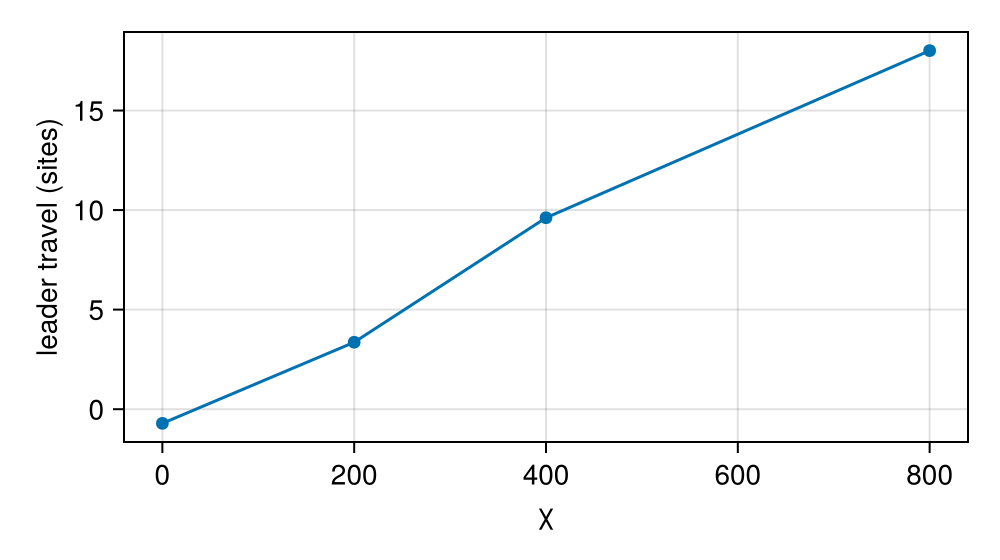

Workshop: lab exercises
These exercises practise the tutorials. Each one states a question, gives a starting point, and hides an answer: click Answer to open it. Try first; the answers are one way to do it, not the only one. Runs are kept short so that every exercise runs in seconds on a laptop.
Start every session with:
using Potts, PottsModels, MakiePotts, CairoMakie
using Statistics: meanExercise 1: make sorting fail
Start from the Graner & Glazier (1992) model with the paper's parameters and aggregate. The sorting depends on the order of the contact energies. Change one entry of J so that the aggregate no longer sorts, and show it with a number.
Starting point (the paper's model; the run is 1600 MCS, 100 of the paper's MCS, instead of the paper's 10⁴):
σ0, kinds0 = graner_glazier_state()
@named gg = GranerGlazier(; lattice = size(σ0))
prob = PottsProblem(gg, [ownership => σ0, kind => kinds0], (0, 1600); seed = 1)
getp(prob, :J)(prob) # rows and columns: medium, dark, light3×3 StaticArraysCore.SMatrix{3, 3, Float64, 9} with indices SOneTo(3)×SOneTo(3):
0.0 16.0 16.0
16.0 2.0 11.0
16.0 11.0 14.0The paper's run, for reference:
Hint
Sorting needs a positive surface tension between the kinds, $J_{dl} - (J_{dd} + J_{ll})/2 > 0$. A measure of mixing is the fraction of dark–light contacts among all cell–cell contacts.
Answer
The paper's table has $J_{dl} - (J_{dd} + J_{ll})/2 = 11 - 8 = 3 > 0$. With J(dark, light) = 6 (paper: 11) the tension is negative, so dark–light contacts are cheaper than like contacts and the kinds mix. We compare the fraction of heterotypic contacts at the start and at the end of both runs:
function heterotypic_fraction(u)
σ, k = u.σ, u.cell.kind
mixed = total = 0
for x in CartesianIndices(σ), step in ((1, 0), (0, 1), (1, 1), (1, -1))
y = CartesianIndex(mod1.(Tuple(x) .+ step, size(σ)))
a, b = σ[x], σ[y]
(a == b || a == 0 || b == 0) && continue
total += 1
mixed += k[a] != k[b]
end
return mixed / total
end
paper = solve(prob, SequentialCPM())
mixing = solve(remake(prob; p = [:J => [0 16 16; 16 2 6; 16 6 14]]), SequentialCPM())
(start = heterotypic_fraction(prob.u0), paper = heterotypic_fraction(paper.u[end]),
mixing = heterotypic_fraction(mixing.u[end]))(start = 0.47443762781186094, paper = 0.26837463250734983, mixing = 0.6705012325390304)In the paper's model the fraction falls as the kinds sort; with J(dark, light) = 6 it rises well above its starting value. The neutral value J(dark, light) = 8 is not enough: the fraction still falls (to about 0.37 against 0.25 for the paper's table), because the two kinds' different energies against the medium still push the light cells outwards.
Exercise 2: temperature
How does the temperature change sorting? Run the paper's model at T = 2, 10 (the paper's value), 20 and 80, and compare the heterotypic fraction and the number of cells after 100 paper MCS.
Answer
function at_temperature(T)
s = solve(remake(prob; p = [:T => T]), SequentialCPM())
return (T = T, fraction = round(heterotypic_fraction(s.u[end]); digits = 3),
cells = count(>(0), s[:volume][end]))
end
at_temperature.([2.0, 10.0, 20.0, 80.0])4-element Vector{@NamedTuple{T::Float64, fraction::Float64, cells::Int64}}:
(T = 2.0, fraction = 0.389, cells = 64)
(T = 10.0, fraction = 0.268, cells = 64)
(T = 20.0, fraction = 0.206, cells = 64)
(T = 80.0, fraction = 0.279, cells = 63)At T = 2 the membranes barely fluctuate and the cells are stuck: the fraction falls least from its start (0.47). Raising the temperature speeds sorting up, up to about T = 20. Beyond that, the fluctuations work against sorting: at T = 80 the fraction is higher again and some of the 64 cells have vanished. Graner and Glazier scan the temperature in their 1993 paper.
Exercise 3: add chemotaxis to one kind
Here is a generic teaching model with two kinds and a fixed gradient of c, increasing to the right. Make only the leader cells chemotactic and show that they move right further than the followers. Runs are random, so compare a few seeds.
@potts_model Two begin
@kinds medium leader follower
@parameters begin
χ = 0.0
J[kind, kind] = [0 10 10; 10 8 8; 10 8 8]
end
@variables c(site) = 0.0
@lattice Lattice((80, 40); boundary = (Closed(), Periodic()), neighborhood = Moore(1))
@energy begin
Volume(leader, follower; target = 25.0, strength = 2.0)
contacts => J[kind, kind′]
end
@sweep Metropolis(; temperature = 8.0)
endAnswer
Extend the model with a chemotactic drive restricted to leaders, and set the gradient in the operating point:
@potts_model TwoChemo begin
@extend χ, c, leader = base = Two()
@drive Chemotaxis(c; strength = χ, kinds = (leader,))
end
@named twochemo = TwoChemo()
op = layout(Scattered(12, (5, 5); region = (10:30, 1:40), kinds = [:leader, :follower], seed = 1), twochemo)
c0 = [x / 80 for x in 1:80, y in 1:40]
function mean_x(u, k)
xs = [x[1] for x in CartesianIndices(u.σ) if u.σ[x] != 0 && u.cell.kind[u.σ[x]] == k]
return mean(xs)
end
chemo = PottsProblem(twochemo, [op; :c => c0; :χ => 400.0], (0, 600); seed = 1)
map(1:3) do seed
sol = solve(remake(chemo; seed), SequentialCPM())
(leaders = mean_x(sol.u[end], 1) - mean_x(sol.u[1], 1),
followers = mean_x(sol.u[end], 2) - mean_x(sol.u[1], 2))
end3-element Vector{@NamedTuple{leaders::Float64, followers::Float64}}:
(leaders = 8.958333333333336, followers = 5.206812652068127)
(leaders = 13.510638297872344, followers = 6.24330900243309)
(leaders = 10.522781774580338, followers = 5.283687943262411)The numbers are how far each kind's mean x position moved, in sites. The leaders move right in every run, about twice as far as the followers. The followers are not chemotactic, yet they move right too: they stick to the leaders (all cell–cell contacts cost the same, J = 8) and are dragged and pushed along. A higher J(leader, follower) weakens that coupling.
Exercise 4: scan a parameter with an ensemble
Using your answer to Exercise 3, measure how far the leaders travel as a function of χ, with 2 replicates per value, in one EnsembleProblem.
Answer
base_prob = PottsProblem(twochemo, [op; :c => c0], (0, 400); seed = 1)
χs = [0.0, 200.0, 400.0, 800.0]
ens = EnsembleProblem(base_prob;
prob_func = (p, ctx) -> remake(p; p = [:χ => χs[mod1(ctx.sim_id, length(χs))]]),
output_func = (s, i) -> (mean_x(s.u[end], 1) - mean_x(s.u[1], 1), false))
res = solve(ens, SequentialCPM(); trajectories = 2length(χs))
travel = vec(mean(reshape(res.u, length(χs), 2); dims = 2))
fig = Figure(size = (500, 280))
ax = Axis(fig[1, 1]; xlabel = "χ", ylabel = "leader travel (sites)")
scatterlines!(ax, χs, travel)
fig
Exercise 5: contact inhibition in a growing colony
The OpenVT growing monolayer (OpenVTGrowingMonolayer, Artistoo parameters) grows without inhibition by default (β = 0); the benchmark's inhibited runs use β = 0.9. This exercise uses that 2024 set as a lighter teaching example; the benchmark's reference model is OpenVTReferenceMonolayer (Table S1). Compare the cell counts of both after 900 MCS. (Benchmark lattice: 400×400; here: 150×150.)
Answer
@named openvt = OpenVTGrowingMonolayer(; lattice = (150, 150))
start = openvt_monolayer_state(; lattice = (150, 150))
p0 = PottsProblem(openvt, start, (0, 900); seed = 1, capacity = 1200)
count_cells(s) = count(>(0), s[:volume][end])
(free = count_cells(solve(p0, SequentialCPM())),
inhibited = count_cells(solve(remake(p0; p = [:β => 0.9]), SequentialCPM())))(free = 763, inhibited = 612)With inhibition the colony has about a fifth fewer cells: squeezed cells in the interior stop growing, so they divide later. In a young colony of a few dozen cells the two runs hardly differ; inhibition matters once the cells are crowded.
The benchmark's full run:
Exercise 6: your own layout
Write a layer that paints a ring of n square cells around the centre of the lattice, and draw the starting state it gives the Graner–Glazier model.
Answer
struct Ring <: AbstractLayout
n::Int
radius::Float64
size::Int
kinds::Vector{Symbol}
end
function Potts.paint!(op::Potts.LayoutState, r::Ring, lat)
c = size(lat) ./ 2
for i in 1:(r.n)
θ = 2π * i / r.n
x0 = round.(Int, c .+ r.radius .* (cos(θ), sin(θ)))
id = Potts.new_cell!(op, r.kinds[mod1(i, length(r.kinds))])
Potts.assign!(op, (x0[1]:(x0[1] + r.size - 1), x0[2]:(x0[2] + r.size - 1)), id)
end
Potts.record!(op; requested = r.n, painted = r.n)
return nothing
end
ring = layout(Ring(12, 20.0, 5, [:dark, :light]), gg)
frame = renderframe(PottsProblem(gg, ring, (0, 0)).u0)
fig = Figure(size = (300, 300))
ax = Axis(fig[1, 1]; aspect = DataAspect())
hidedecorations!(ax)
pottsplot!(ax, frame)
fig![](data:image/png;base64, iVBORw0KGgoAAAANSUhEUgAAAlgAAAJYCAYAAAC+ZpjcAAAAAXNSR0IArs4c6QAAAARnQU1BAACxjwv8YQUAAAAgY0hSTQAAeiYAAICEAAD6AAAAgOgAAHUwAADqYAAAOpgAABdwnLpRPAAAAAlwSFlzAAAdhwAAHYcBj+XxZQAACo1JREFUeAHtwbFtYwcCBcAn4PXCXIUQCliMSmAxGxAEto3NfzXyAU4NnM94t6TomenXfwQAgJkGAICpBgCAqQYAgKkGAICpBgCAqQYAgKkGAICpBgCAqQYAgKkGAICpBgCAqQYAgKkGAICpBgCAqQYAgKkGAICpBgCAqQYAgKkGAICpBgCAqQYAgKkGAICpBgCAqQYAgKkGAICpBgCAqQYAgKkGAICpBgCAqQYAgKnmgd7e3gIA8P/w9fWVR2kAAJhqnsDX11cAABbe3t7yaA0AAFMNAABTDQAAUw0AAFMNAABTDQAAUw0AAFMNAABTDQAAUw0AAFMNAABTDQAAUw0AAFMNAABTDQAAUw0AAFMNAABTDQAAUw0AAFMNAABTDQAAUw0AAFPNi/vx40d+/foVAOA5vL+/53K55JU1L+7Xr1/5+fNnAIDncblc8soaAACmGgAAphoAAKYaAACmGgAAphoAAKYaAACmGgAAphoAAKYaAACmGgAAphoAAKYaAACmGgAAphoAAKYaAACmGgAAphoAAKYaAACmGgAAphoAAKYaAACmGgAAphoAAKYaAACmGgAAphoAAKYaAACmGgAAphoAAKYaAACmGgAAphoAAKYaAACmGgAAphoAAKYaAACmGgAAphoAAKYaAACmGgAAphoAAKYaAACmGgAAphoAAKYaAACmGgAAphoAAKYaAACmGgAAphoAAKYaAACmGgAAphoAAKYaAACmGgAAphoAAKYaAACmGgAAphoAAKYaAACmGgAAphoAAKYaAACmGgAAphoAAKYaAACmGgAAphoAAKYaAACmGgAAphoAAKYaAACmGgAAphoAAKYaAACmGgAAphoAAKYaAACmGgAAphqAJ3L6uOcZHLdzAP6pBgCAqQYAgKkGAICpBgCAqQYAgKkGAICpBgCAqQYAgKkGAICpBgCAqQYAgKkGAICpBgCAqQYAgKkGAICpBgCAqQYAgKkGAICpBgCAqQZ4uM/7KY92PR/h+XzeT3kG1/MR4O9rAACYagAAmGoAAJhqAACYagAAmGoAAJhqAACYagAAmGoAAJhqAACYagAAmGoAAJhqAJ7IcTsH4LtrAACYagAAmGoAAJhqAACYagAAmGoAAJhqAACYagAAmGoAAJhqAACYagAAmGoAAJhqAACYagAAmGoAAJhqAACYagAAmGoAAJhqAACYagAAmGqAh7uej8BfuZ6PAN9PAwDAVAMAwFQDAMBUAwDAVAMAwFQDAMBUAwDAVAMAwFQDAMBUAwDAVAMAwFQDAMBUAy/g9HHPMzhu5wB/On3c8wyO2znwuzUAAEw1AABMNQAATDUAAEw1AABMNQAATDUAAEw1AABMNQAATDUAAEw1AABMNQAATDUAAEw1AABMNQAATDUAAEw1AABMNQAATDUAAEw1AABMNQAATDUAAEw1AABMNQAATDUAAEw1AABMNQAATDUAAEw1AABMNQAATDUAAEw1AABMNQAATDXwAo7bOcBzOW7nwL9VAwDAVAMAwFQDAMBUAwDAVAMAwFQDAMBUAwDAVAMAwFQDAMBUAwDAVAMAwFQDAMBUAwDAVAMAwFQDAMBUAwDAVAMAwFQDAMBUAwDAVAMAwFQDAMBUAwDAVAMAwFQDAMBUAwDAVAMAwFQDAMBUAwDAVAMAwFQDAMBUAwDAVAMAwFQDAMBUAw/weT/lGVzPR4Dv4/N+yqNdz0fgv2kAAJhqAACYagAAmGoAAJhqAACYagAAmGoAAJhqAACYagAAmGoAAJhqAACYagAAmGoAAJhqAACYagAAmGoAAJhqAACYagAAmGoAAJhqAACYagAAmGoAAJhqAACYagAAmGoAAJhqAACYagAAmGoAAJhqAACYagAAmGoAAJhqAACYagAAmGrgAa7nIwD/q+v5CHwHDQAAUw0AAFMNAABTDQAAUw0AAFMNAABTDQAAUw0AAFMNAABTDQAAUw0AAFMNAABTDQAAUw0AAFMNAABTDQAAUw0AAFMNAABTDQAAUw0AAFMNAABTDQAAUw0AAFMNAABTDQAAUw0AAFMNAABTDQAAUw0AAFMNAABTDQAAUw0AAFMNAABTDbyA08c9z+C4nQP86fRxzzM4bufA79YAADDVAAAw1QAAMNUAADDVAAAw1QAAMNUAADDVAAAw1QAAMNUAADDVAAAw1QAAMNUAADDVAAAw1QAAMNUAADDVAAAw1QAAMNUAADDVAAAw1QAAMNUAADDVAAAw1QAAMNUAADDVAAAw1QAAMNUAADDVAAAw1QAAMNUAADDVAAAw1cALOG7nAM/luJ0D/1YNAABTDQAAUw0AAFMNAABTDQAAUw0AAFMNAABTDQAAUw0AAFMNAABTDQAAUw0AAFMNAABTDfBwn/dTHu16PsLz+byf8gyu5yPA39cAADDVAAAw1QAAMNUAADDVAAAw1QAAMNUAADDVAAAw1QAAMNUAADDVAAAw1QAAMNUAADDVAAAw1QAAMNUAADDVAAAw1QAAMNUAADDVADyR08c9z+C4nQPwTzUAAEw1AABMNQAATDUAAEw1AABMNQAATDUAAEw1AABMNQAATDUAAEw1AABMNQAATDUAAEw1wMNdz0fgr1zPR4DvpwEAYKoBAGCqAQBgqgEAYKoBAGCqAQBgqgEAYKoBAGCqAQBgqgEAYKoBAGCqAQBgqgEAYKoBAGCqAQBgqgEAYKoBAGCqAQBgqgEAYKoBeCLH7RyA764BAGCqAQBgqgEAYKoBAGCqAQBgqgEAYKoBAGCqAQBgqgEAYKoBAGCqAQBgqgEAYKoBAGCqAQBgqgEAYKoBAGCqAQBgqgEAYKoBAGCqAQBgqgEAYKoBAGCqAQBgqgEAYKoBAGCqAQBgqgEAYKoBAGCqAQBgqgEAYKoBAGCqAQBgqgEAYKoBAGCqAQBgqgEAYKoBAGCqAQBgqgEAYKoBAGCqAQBgqgEAYKoBAGCqAQBgqgEAYKoBAGCqAQBgqgEAYKoBAGCqAQBgqgEAYKoBAGCqAQBgqgEAYKoBAGCqAQBgqgEAYKoBAGCqAQBgqgEAYKoBAGCqAQBgqgEAYKoBAGCqAQBgqgEAYKoBAGCqAQBgqgEAYKoBAGCqAQBgqgEAYKoBAGCqAQBgqgEAYKoBAGCqAQBgqgEAYKoBAGCqAQBgqgEAYKoBAGCqAQBgqgEAYKoBAGCqAQBgqgEAYKoBAGCqAQBgqgEAYKoBAGCqAQBgqgEAYKoBAGCqAQBgqgEAYKoBAGCqAQBgqgEAYKoBAGCqeXHv7+8BAJ7H+/t7Xl3z4i6XSy6XSwAAfpcGAICpBgCAqQYAgKkGAICpBgCAqQYAgKkGAICpBgCAqQYAgKkGAICpBgCAqQYAgKkGAICpBgCAqQYAgKkGAICpBgCAqQYAgKkGAICpBgCAqQYAgKkGAICp5gm8vb0FAOBVNAAATDUP9PX1FQCAV9MAADDVAAAw1QAAMNUAADDVAAAw1QAAMNUAADDVAAAw1QAAMNUAADDVAAAw1QAAMNUAADDVAAAw1QAAMNUAADDVAAAw1QAAMNUAADDVAAAw1QAAMNUAADDVAAAw1QAAMNUAADDVAAAw1QAAMNUAADDVAAAw1QAAMPUHKDxeKlqzQcIAAAAASUVORK5CYII=)
Going further
- Put a cell-cycle clock in the cells of the OpenVT model with
@componentsand make cells divide when the clock completes, instead of at a fixed size (Tutorial 5). - Link the leaders of Exercise 3 to followers on contact, and see whether they drag them along (Tutorial 6).
- Run Exercise 1 on the GPU, if you have one (Tutorial 8).